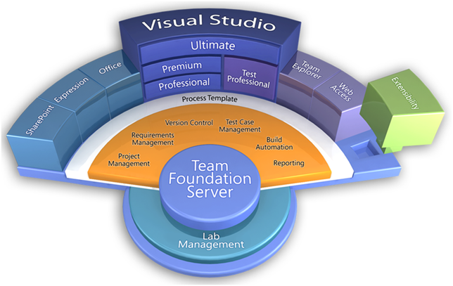
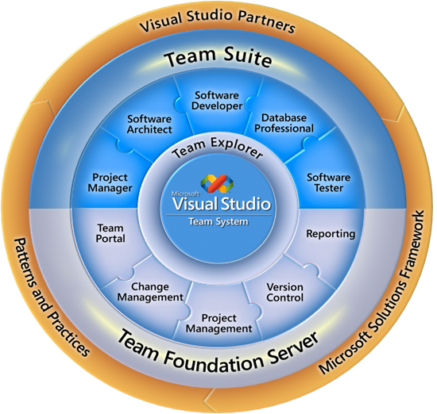

軟體工程一直以來就是軟體研發團隊所重視的議題，如何兼顧開發時效並落實軟體工程方法論於的軟體專案中，讓團隊中不同的開發成員進行協同運作，是一大挑戰；適當的工具可協助研發團隊落實良好的專案管理、制定開發規範及流程，讓軟體工程不只是個口號。
軟體工程一直以來就是軟體研發團隊所重視的議題，如何兼顧開發時效並落實軟體工程方法論於的軟體專案中，讓團隊中不同的開發成員進行協同運作，是一大挑戰；適當的工具可協助研發團隊落實良好的專案管理、制定開發規範及流程，讓軟體工程不只是個口號。
軟體生命週期管理一直是軟體開發上一門很大的學問，導入一個好的開發流程，可以避免遇到專案開發上的問題，例如，一再重覆往返無法通過測試的程式、倍數成長的管理成本、團隊效能低落…等。微軟提出Microsoft Solution Framework (MSF)，並且在Team Foundation Server上利用這個軟體框架設計出兩種不同的開發流程，分別是「MSF for CMMI Process Improvement」及「MSF for Agile Software Development」，甚至也可以外掛或客製化其它不同的開發流程。

Microsoft Visual Studio Team Foundation Server 是 Visual Studio 方案的核心共同作業平台，可用於進行應用程式開發週期管理。Team Foundation Server 提供了一些基本服務，例如版本控制、工作項目和 Bug 追蹤、自動建置和資料倉儲。功能強大的報表工具和儀表板可提供整體專案健康情況的歷程趨勢和可見度，而且即時度量可針對潛在問題提出早期警告，能夠進行資料導向決策和流程更正。此外，敏捷式規劃工具以及與 Microsoft Project 和 Project Server 的整合可協助規劃和管理專案。
